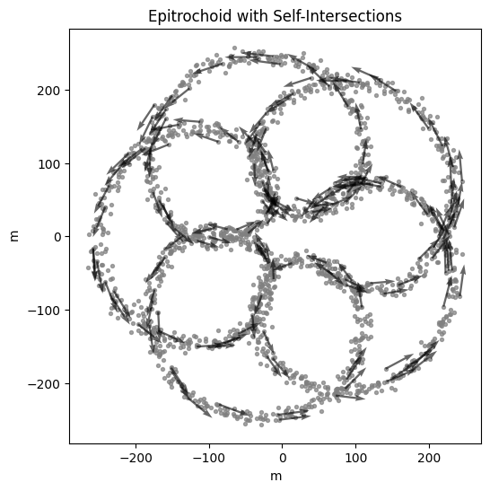
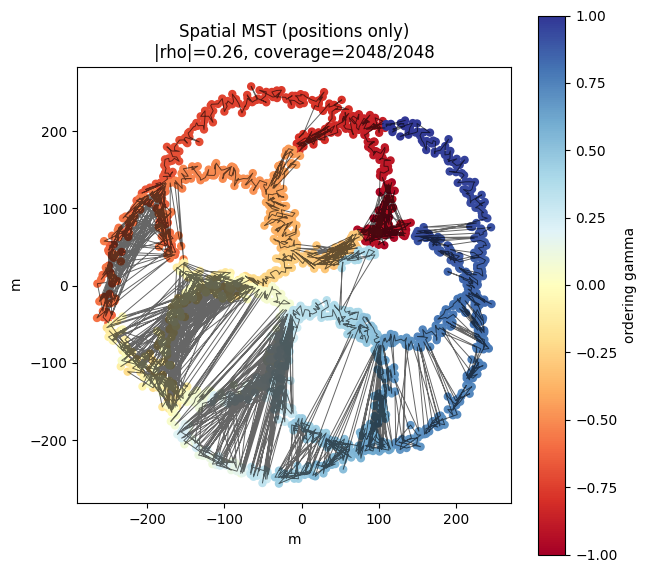
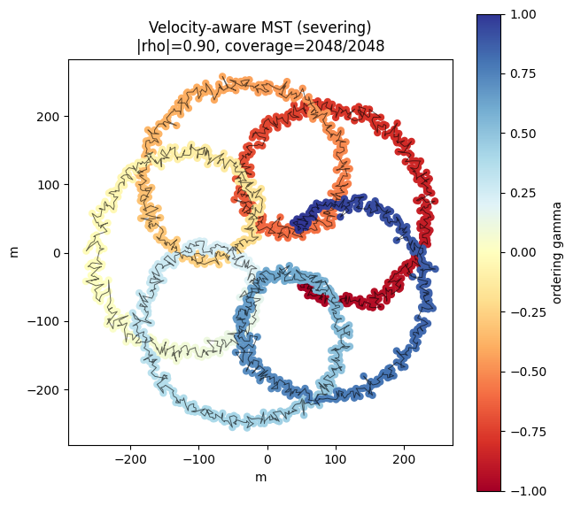
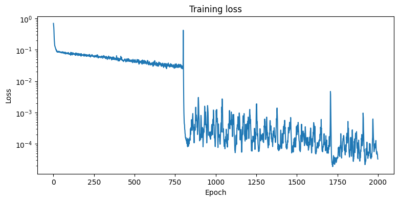
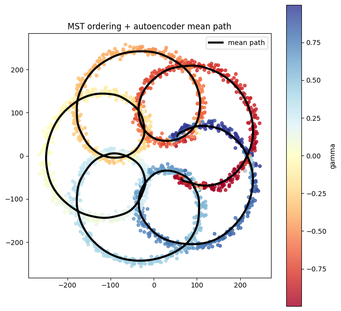

Ordering a Self-Intersecting Epitrochoid with the MST Backbone#

The MSTOrderer links each tracer to its \(k\) nearest neighbours, keeps the minimum spanning tree (MST) of those links, and orders the tracers along the tree’s longest path (its diameter). It needs no start point: the ends of the diameter are the two tips of the curve. This notebook uses the self-intersecting epitrochoid from the other tutorials to show a subtlety:
a spatial MST short-circuits across the self-intersections, and
a velocity-aware MST (severing anti-parallel edges) is needed to keep the ordering on a coherent branch.
The takeaway: velocity information is necessary on self-overlapping curves. (For curves with many loops like this one, the LocalFlowOrderer is often the better tool, as in the epitrochoid autoencoder tutorial; the MST’s sweet spot is the near-closed single loop.)
It helps to have read the stream MST tutorial first.
[1]:
import jax
import jax.random as jr
import matplotlib.pyplot as plt
import numpy as np
from scipy.spatial import cKDTree
import quaxed.numpy as jnp
import unxt as u
import phasecurvefit as pcf
[2]:
key = jr.key(201030)
usys = u.unitsystems.si
Data: Self-Intersecting Epitrochoid Curve#
[3]:
def make_self_intersecting_stream(
key,
*,
n: int,
noise_sigma=0.5,
scale=120.0,
R: float = 5.0,
r: float = 1.0,
d: float = 4.5,
):
"""Return (t, pos, vel) for an OPEN curve with self-intersections."""
# Single outer rotation: 5° to 355° with a 10° gap
t_start = 5.0 * jnp.pi / 180.0
t_end = 355.0 * jnp.pi / 180.0
t = jnp.linspace(t_start, t_end, n)
ratio = (R + r) / r # internal rotations per outer rotation
x0 = scale * ((R + r) * jnp.cos(t) - d * jnp.cos(ratio * t)) / 5.0
y0 = scale * ((R + r) * jnp.sin(t) - d * jnp.sin(ratio * t)) / 5.0
# Derivatives for velocity
dx0 = scale * (-(R + r) * jnp.sin(t) + d * ratio * jnp.sin(ratio * t)) / 5.0
dy0 = scale * ((R + r) * jnp.cos(t) - d * ratio * jnp.cos(ratio * t)) / 5.0
kx, ky = jr.split(key)
x = x0 + noise_sigma * jr.normal(kx, (n,))
y = y0 + noise_sigma * jr.normal(ky, (n,))
pos = {"x": u.Q(x, usys["length"]), "y": u.Q(y, usys["length"])}
vel = {"x": u.Q(dx0, usys["speed"]), "y": u.Q(dy0, usys["speed"])}
return t, pos, vel
[4]:
key, subkey = jr.split(key)
t, pos, vel = make_self_intersecting_stream(subkey, n=2048, noise_sigma=6)
# shuffle so the input order carries no ordering information
key, subkey = jr.split(key)
order = jr.permutation(subkey, jnp.arange(len(t)))
qs = jax.tree.map(lambda a: a[order], pos)
ps = jax.tree.map(lambda a: a[order], vel)
t_shuffled = t[order]
[5]:
_fig, ax = plt.subplots(figsize=(6, 6))
ax.scatter(qs["x"], qs["y"], color="gray", alpha=0.7, s=8)
every = 12
ax.quiver(
np.array(qs["x"][::every]),
np.array(qs["y"][::every]),
np.array(ps["x"][::every]),
np.array(ps["y"][::every]),
scale=10_000,
width=0.005,
alpha=0.6,
color="black",
)
ax.set(aspect="equal", title="Epitrochoid with Self-Intersections")
plt.show()

A helper: how well is the ordering monotone in the true parameter?#
We know the true curve parameter t, so we can score any ordering by the correlation between each tracer’s position in the ordering and its true t (\(|\rho|\) ≈ 1 is perfect).
[6]:
def rho(result):
to = np.asarray(t_shuffled)[np.asarray(result.ordering)]
r = np.corrcoef(np.arange(to.size), to)[0, 1]
cov = int((result.indices >= 0).sum())
return abs(r), cov
def plot_order(result, title):
_fig, ax = plt.subplots(figsize=(7, 7))
ax.scatter(qs["x"], qs["y"], s=3, c="lightgray")
oq = {k: v[result.ordering] for k, v in result.positions.items()}
timeline = np.linspace(-1, 1, len(result.ordering))
im = ax.scatter(oq["x"], oq["y"], s=25, c=timeline, cmap="RdYlBu")
ax.plot(oq["x"], oq["y"], c="k", lw=0.7, alpha=0.6)
plt.colorbar(im, ax=ax, label="ordering gamma")
r, cov = rho(result)
ax.set(aspect="equal", title=f"{title}\n|rho|={r:.2f}, coverage={cov}/{len(t)}")
plt.show()
1. Spatial MST — and why it short-circuits#
We set jump_cap from the data (a few times the median nearest-neighbour distance). With positions only, the MST happily bridges the two branches wherever they cross, so the arc-length ordering jumps between branches.
[7]:
P = np.stack([np.asarray(u.ustrip(usys, qs[c])) for c in ("x", "y")], axis=1)
med = float(np.median(cKDTree(P).query(P, k=2)[0][:, 1]))
spatial = pcf.orderers.MSTOrderer(k=16, jump_cap=6.0 * med, on_disconnected="largest")
res_spatial = spatial.order(qs, ps, metadata=pcf.StateMetadata(usys=usys))
plot_order(res_spatial, "Spatial MST (positions only)")

2. Velocity-aware MST — cutting anti-parallel edges#
At a crossing the two branches travel in different directions, so their velocity alignment cos(v_i, v_j) is low. sever_cos_threshold drops those edges, so the MST stays on a coherent branch. The anti-parallel edges at the crossings are exactly the ones the spatial MST used to cheat, so severing them recovers a clean ordering at essentially full coverage. (On sparser data severing can fragment the graph; on_disconnected then decides what to do — here we keep the largest component to
be safe.)
[8]:
velaware = pcf.orderers.MSTOrderer(
k=16,
jump_cap=8.0 * med,
sever_cos_threshold=0.9,
orient_by_velocity=True,
on_disconnected="largest",
)
res_vel = velaware.order(qs, ps, metadata=pcf.StateMetadata(usys=usys))
plot_order(res_vel, "Velocity-aware MST (severing)")

The velocity-aware ordering follows a single coherent strand cleanly (\(|\rho|\) jumps from ~0.26 to ~0.9), while the spatial MST zig-zags across branches. This is the sense in which velocity is necessary for self-overlapping curves.
That said, a curve with many self-crossings is not the MST’s natural home: the LocalFlowOrderer follows such a curve directly. The MST is at its best on a near-closed single loop, such as a tidal stream, where the velocity field reverses at the progenitor so a walk must start there and go both ways. The MST orders such a loop tip to tip with no start point and little tuning.
3. Feeding the ordering to the autoencoder#
The autoencoder has two halves: an encoder mapping each tracer to its ordering parameter \(\gamma\), and a decoder mapping \(\gamma\) back to a position (the smooth “mean path”). Training runs in three phases - encoder, decoder, then a joint phase.
Two choices matter for a self-intersecting curve like this one:
Decoder architecture. The epitrochoid makes five tight inner loops, so the decoder \(\gamma \to (x, y)\) must bend sharply five times. A plain MLP (
TrackNet) over-smooths these loops away. We instead useFourierTrackNet, which feeds Fourier features \([\gamma, \sin(\pi k\gamma), \cos(\pi k\gamma)]\) (\(k = 1 \dots K\)) to the MLP, giving it the high-frequency capacity to follow the loops. The decoder is fully swappable viaPathAutoencoder.make(decoder=...).The joint phase. The joint (“both”) phase optimises a different composite objective (membership + velocity alignment), which on this hard topology inflates the reported loss without improving the geometry. We set
n_epochs_both=0and stop after the decoder phase, whose spatial reconstruction is best here.
[9]:
key, model_key, train_key = jr.split(key, 3)
enc_key, dec_key = jr.split(model_key)
normalizer = pcf.nn.StandardScalerNormalizer(qs, ps)
# Fourier-feature decoder: high-frequency capacity for the sharp petal excursions
# (a plain TrackNet over-smooths a 5-fold self-intersection).
decoder = pcf.nn.FourierTrackNet(
out_size=2, n_frequencies=12, width_size=256, depth=4, key=dec_key
)
ae_model = pcf.nn.PathAutoencoder.make(
normalizer, gamma_range=res_vel.gamma_range, decoder=decoder, key=enc_key
)
# Stop after the decoder phase (see above): no joint phase on this hard topology.
config = pcf.nn.TrainingConfig(
n_epochs_encoder=800, n_epochs_decoder=1200, n_epochs_both=0
)
result, _, losses = pcf.nn.train_autoencoder(
ae_model, res_vel, key=train_key, config=config
)
[10]:
_fig, ax = plt.subplots(figsize=(9, 4))
ax.plot(np.asarray(losses))
ax.set(xlabel="Epoch", ylabel="Loss", yscale="log", title="Training loss")
plt.show()

[11]:
_fig, ax = plt.subplots(figsize=(8, 8))
all_gamma, all_probs = result.model.encode(res_vel.positions, res_vel.velocities)
qs_pred = result(jnp.linspace(*result.gamma_range, 1_000))
im = ax.scatter(
np.asarray(qs["x"]),
np.asarray(qs["y"]),
s=20,
c=np.asarray(all_gamma),
cmap="RdYlBu",
alpha=0.8,
)
ax.plot(
np.asarray(qs_pred["x"]), np.asarray(qs_pred["y"]), c="k", lw=3, label="mean path"
)
plt.colorbar(im, ax=ax, label="gamma")
ax.set(aspect="equal", title="MST ordering + autoencoder mean path")
ax.legend()
plt.show()

What to look for: the mean path should trace every inner loop and cross itself where the data do. Compare it with the running-mean path on the same curve, which cuts inside the loops.
Takeaways#
On a self-crossing curve, a positions-only MST short-circuits at the crossings.
sever_cos_thresholdcuts links between tracers moving in different directions and recovers the ordering.The decoder is swappable:
FourierTrackNetgives it the capacity for sharp bends.Judge the final track by its geometry, not by the loss. Here stopping after the decoder phase (
n_epochs_both=0) gives the better track.